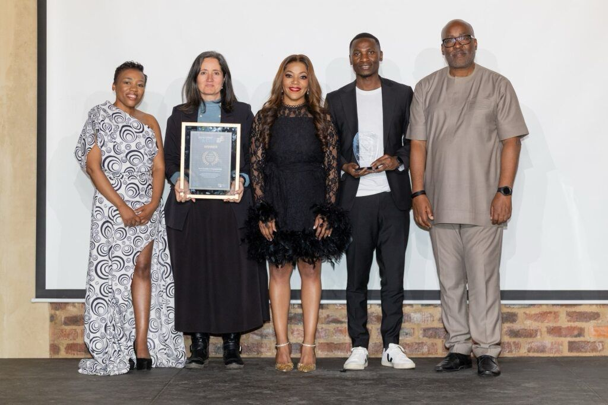

Exellence in Education
New Leaders Foundation is a non profit organisation committed to transforming South African education. We believe that education and unemployment are two of the biggest challenges of our generation, and we are dedicated to developing empowered leaders in education who will shape a positive future for our communities.
Our Impact at a Glance
Who We Are
Founded in 2009, New Leaders Foundation is an independent non-profit company dedicated to transforming South African education. For more than a decade, our team has focused on building a culture of data-driven decision making through our Data Driven Districts programme to improve the quality of interventions in education districts across the country.
We are supported by leading partners including the Michael & Susan Dell Foundation, FirstRand Empowerment Foundatioin, Old Mutual, Zenex Foundation, the Oppenheimer Memorial Trust, and the DG Murray Trust, in partnership with Department of Basic Education.
Learn More About NLFData Driven Education

Award-Winning Work
PMI Non-Profit Project of the Year

Project Management Institute — 2025
Excellence in Building Purpose-Driven Impact
Trialogue Awards — 2025
Investors in People Awards — 2025